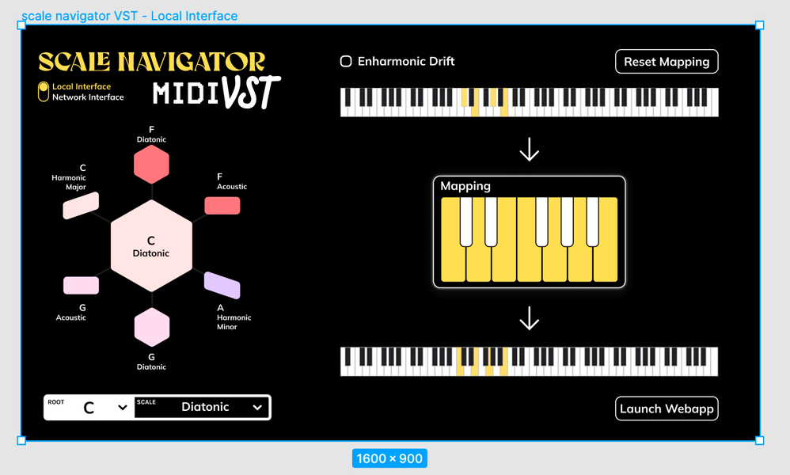

Tonalign
Role · Designer & developer
With · Brady Boettcher (C++/JUCE) · Dylan & Jono Freeman (2022 UI round)
Platforms · VST3 / AU (macOS, Windows)
Problem
Tonalign is AutoTune for MIDI. Play a note outside the current scale and what comes out is its nearest available neighbor, corrected in real time inside the DAW. The incoming note is kept and shown, so you can always see what you played against what the plugin let through.
On January 19, 2022 I described it to a friend as "basically autotune for MIDI in the context of the scale network," and that description has outlived two renames. One repo, three names, five years: Scale Navigator MIDI VST (2021), PitchSnap (2026), Tonalign (2026).
Insight
The design problem: showing the correction
A pitch-correction layer is invisible by definition. If it works, the wrong note simply becomes a right note and nobody sees anything happen. That's fine for the listener and a real problem for the player: you send a C, you hear a D♭, and the plugin has given you no way to understand why. A correction you can't see feels like a bug.
So the design problem underneath Tonalign was never "how do I snap the note." Snapping the note is arithmetic. The problem was: how do you draw the difference between what the player sent and what the plugin let through, on a surface small enough to live in a plugin window, without turning it into a readout the player has to study mid-performance.
The engineering was hard: my first serious work in JUCE and C++, and the start of a five-year collaboration with Brady Boettcher. The design story, though, is the in/out delta.
Prototype
Four weeks in, already recruiting testers
Four weeks after the first commit I had a running plugin and was already asking people to test it. The earliest screenshot, from July 26, 2021, went to Andrew Piepenbrink with "Cooking with gas Andrew!!!!": a gray window with scattered pastel polygons, a keyboard in the top-right corner, and JUCE's "Made with JUCE" badge still sitting in the corner. It corrected notes. It did not yet explain itself.
Brady came in via a JUCE forum post, mid-pandemic, on the other side of the world. The pair-programming sessions are literally the branch names in the repo: bboettcher3/session_1 and up. He brought the C++ and JUCE depth; I brought the design and the connection to the wider Scale Navigator system.

July 26, 2021: running four weeks in, already recruiting testers. It corrected notes and couldn't yet explain itself.
Failure
The correction was inaudible and invisible
Two failures, one root cause.
The first surfaced in week four, on July 25, 2021, in a message to Brady: "when correcting notes, if 2 notes are corrected to the same midi note, how to handle that case." Two different wrong notes collapse onto the same right note: a collision the player never asked for and can't see. That exact edge case, overlapping corrections in fast passages, is still one I'm tuning in 2026. A five-year-old open problem, with receipts at both ends.
The second came back in writing. On August 21, 2021, week eight, Tristan Whitehill sent the first external QA report on the plugin. Buried in it: "the initial setup inside the users DAW was not exactly clear when approaching blind," a chord-button bug, and previous-chord tones bleeding through. And this line, which is the whole capture problem in one sentence: "I couldn't remember the buttons I had pressed in succession." The correction was working and the player still couldn't hold onto what had happened.
That is the failure the interface had to answer: not does it snap, but can you follow it.
Iteration
The same delta, drawn four ways
The answer went through four dated stages, and the interesting thing is that the design question stayed identical the whole way (draw the in/out delta) while the drawing kept changing.
2022, the mockup. On February 24, 2022 I made two high-fidelity mockups myself, in the Freeman brand system, and narrated them to Dylan and Jono Freeman feature by feature: a toggle between the "local neighbor" and "global network" interfaces, dropdowns for root and scale, "and then, on the right, some MIDI routing to show what notes are being played, how these notes are being re-mapped, and how the notes are being outputted." That last clause is the design thesis. It's drawn as three keyboards: input, mapping, output, a literal signal-flow diagram of the correction. Eighty minutes later I sent a v2 adding the Local/Network toggle, an Enharmonic Drift checkbox, and a Reset Mapping button, with a note: "I'd love to get the UI finalized by April!" Dylan refined the local-interface mockup in Figma over March 7 to 10, 2022.

Feb 2022: my mockup drew the correction as three keyboards — in, mapping, out. Too much surface for a plugin window.

Dylan Freeman's Figma refinement, March 2022.
2022, what actually shipped. The three-keyboard flow was too much surface for a plugin window. It shipped as one folded keyboard: black keys folded onto white, so for C Acoustic (C D E F♯ G A B♭), F folds to E and B folds to A♯, the mapping made visible on a single row instead of three. The launch-webapp button I'd sketched shipped too, and I taught it to myself overnight from JUCE's own source code (Jan 6, 10:29 pm: "something like this I think" plus a screenshot of Projucer's launchInDefaultBrowser; Jan 7, ~9:27 am: "NVM, I totally did it!!!!"). Three artifacts, one problem, and it moved from open question to shipped feature in about thirteen hours.

Shipped, January 2022: the three-keyboard flow folded to one row. Black keys fold onto white to show the mapping.
2026, the markup. Four years later, rebuilding the plugin as PitchSnap, I was still working the same delta. There's a screenshot of the running plugin with my own annotation drawn on top of it (gray dots above the keys for incoming notes, red dots below for corrected ones) spec'ing how in/out should read on the keyboard. It shipped similarly, with downward arrows marking the notes that moved.

2026, still on the same problem: my markup — gray dots for incoming notes, red dots below for corrected — spec'ing the in/out delta.

Shipped: downward arrows marking the notes that moved. Mockup (2022) → markup (2026) → shipped UI — the same communication problem, drawn four ways over four years.
Final solution
The held note, and who decides
The deepest decision in Tonalign is what happens to a note that's already sounding when the scale changes underneath it.
There is no correct answer. An organ pad should glide to the new pitch. A plucked string is probably best left alone. A synth line might want to be cut at the moment of change. I could have picked one and hard-coded it, and every player whose instrument disagreed would have felt the plugin fighting them.
So I didn't decide. I made it a choice: there isn't one behavior that's correct for every instrument, so I exposed it as a choice instead of hard-coding one. Glide is the default; stay and cut are one control away.
The sharper version of the same idea is the INTERRUPT toggle. With it on, held notes are re-pitched at the exact instant the scale or chord changes, so the modulation stops being a silent background shift and becomes an audible event in every sustained voice. The system saying, in the one channel no player can ignore, this is the note that moved. It's the answer, in sound, to a request I first heard in a 2018 sight-reader survey asking for "a highlight indicating which note has changed": eight years later, delivered as pitch instead of ink.

INTERRUPT on: held notes re-pitch at the instant of modulation, so every sustained voice announces the change.
What I rejected: a single hard-coded held-note behavior (fights half the instruments); a settings panel deep enough to configure everything (the player is performing, not reading); and the full navigator network inside the plugin window. It was in the 2022 mockups, and I cut it. The shipped Tonalign is the mockup with the navigator amputated, because a plugin's job is to stay out of the musical moment, and Dashboard was already the place to explore the network.
Outcome
Tonalign shipped publicly in January 2022 as Scale Navigator MIDI VST, and again, rebuilt, under its current name in 2026. Since then it has been the MIDI-correction layer in every live session I run, including every Ensemble Jammer deployment. It's the "silent" plugin the rest of the ecosystem leans on: it subscribes to Dashboard's shared harmonic state and corrects against whatever chord or scale the room is currently in, no configuration.
It also turned into a compositional instrument I didn't plan for. I run recorded MIDI (Chopin, Liszt, Paganini, competition-grade performances) through it and force it into a harmony of my choosing: "stealing Chopin's texture, but forcing it into the harmonic box that I tell it to be in. A whole new level of plunderphonics." The correction layer became a way to remix world-class playing through my own harmony.
The January 2022 demo. Its title — "Scale Navigator MIDI VST is like AutoTune for MIDI" — is the Tonalign tagline, four years before the Tonalign name.
Setting up the plugin in Ableton Live, January 2022.
What's still unfinished
The collision problem from week four of 2021, two notes correcting onto the same pitch, overlapping corrections in fast passages, is still one I tune by hand. Mid-sustain scale changes still have edge cases. And underneath all of it is an absurdity I've made peace with: because Steinberg makes real MIDI-effect plugins nearly impossible in VST3, Tonalign is technically a synthesizer. There's a silent, no-noise synth always running inside it just so a pure MIDI tool is allowed to exist. The simplest-looking tool in the ecosystem has the strangest thing hiding under it.
Credits
Brady Boettcher, C++/JUCE engineering, from July 2021 to the present. Dylan and Jono Freeman, the 2022 UI design round. Tristan Whitehill, the first external QA report.
Related work
Scale Navigator Dashboard — the harmonic state that Tonalign subscribes to
Ensemble Jammer — the same scale state, followed by networked instruments instead of MIDI
NotesChordScales — the inverse direction: play notes, and the system infers the scale
SNaPS — a sampler with the same scale-aware pitch handling, applied to samples